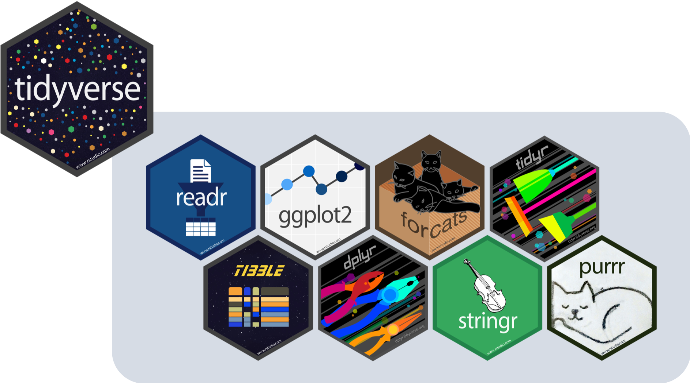

install.packages("janitor") Packages
What are R packages?
A good analogy for R packages is that they are like apps you can download onto a mobile phone:
- Packages contain additional functions and data that are not built into R
Installing packages
Two options to install packages:
- Preferred way:
install.packages()with the package name in quotes
- The “Packages” tab in Viewer pane

- Only install packages once (unless you want to update them)
- Installed from Comprehensive R Archive Network (CRAN) = package mothership
Load packages with library() command
- Use the
library()command to load each required package - Packages need to be reloaded every time you open Rstudio.
- Tip: at the top of your files, have a segment of code dedicated to loading packages
- This way, you can easily see and load packages required for your code
For example, to load a package called
dplyr, you would run the code below:library(dplyr)
Another way to load (and install) packages: pacman
The
pacmanpackage has a function calledp_load()- Can be used to both install and load packages in one step
- Installs the package if necessary
Best when you are loading many packages at once
For example, to load a package called
dplyrusingpacman, you would run the code below:pacman::p_load(dplyr)Note that I am using
pacman::p_load()- This is another way to access a package’s function without loading the whole package
- I am accessing
p_load()from thepacmanpackage
Packages used in this class
tidyverse- We install and load
tidyverse - It is a collection of many packages
- Core tidyverse: most commonly used {tidyverse} packages
- Additional tidyverse packages
- The additional packages are installed when the {tidyverse} package is installed, but they are not loaded when the {tidyverse} package is loaded.
- They need to be loaded individually to use.
- We install and load
For loading datasets:
- readr
- readxl
- haven
For summarizing and visualizing data:
- {janitor}
- {gt}
- {rstatix}
- {gtsummary}
- {naniar}
- {ggplot2}
for wrangling data
- {dplyr}, {tidyr}
Tidyverse

{kind=link}
Install and load packages: Option 1
Run the code below to install packages:
install.packages("here")
install.packages("tidyverse")
install.packages("writexl")
install.packages("rstatix")
install.packages("janitor")
install.packages("naniar")
install.packages("gt")
install.packages("gtsummary")- 1
- This will take a while to install
Load packages with library() command:
library(here)
library(tidyverse)
library(writexl)
library(rstatix)
Attaching package: 'rstatix'The following object is masked from 'package:janitor':
make_clean_namesThe following object is masked from 'package:stats':
filterlibrary(janitor)
library(naniar)
library(gt)
library(gtsummary)
library(readxl)Install and load packages: Option 2
pacman::p_load(
here,
tidyverse,
writexl,
rstatix,
janitor,
naniar,
gt,
gtsummary,
readxl
)References
- Danielle Navarro’s YouTube video on Installing and loading R packages: https://www.youtube.com/watch?v=kpHZVyDvEhQ
- If you want to get more information on packages